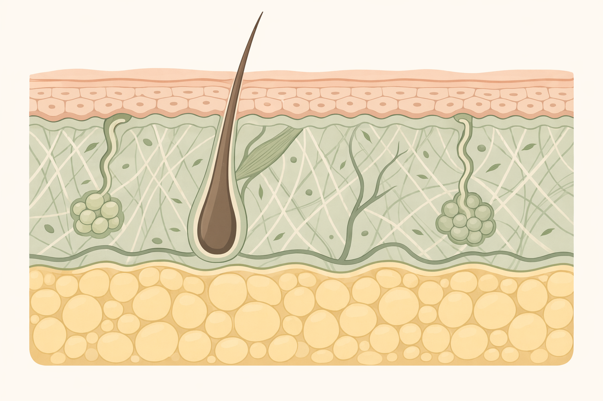
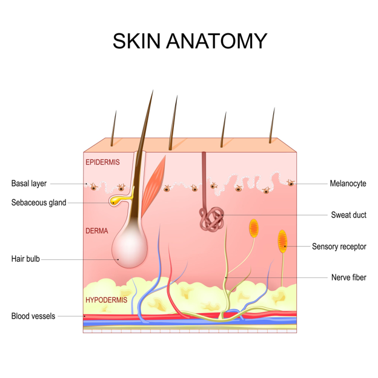
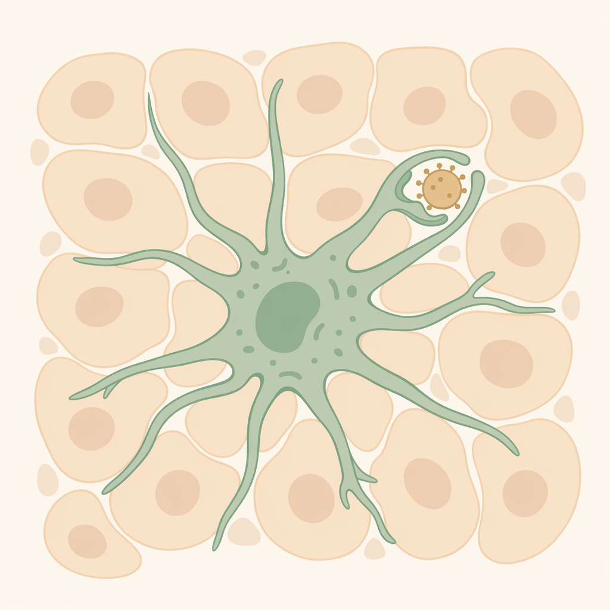
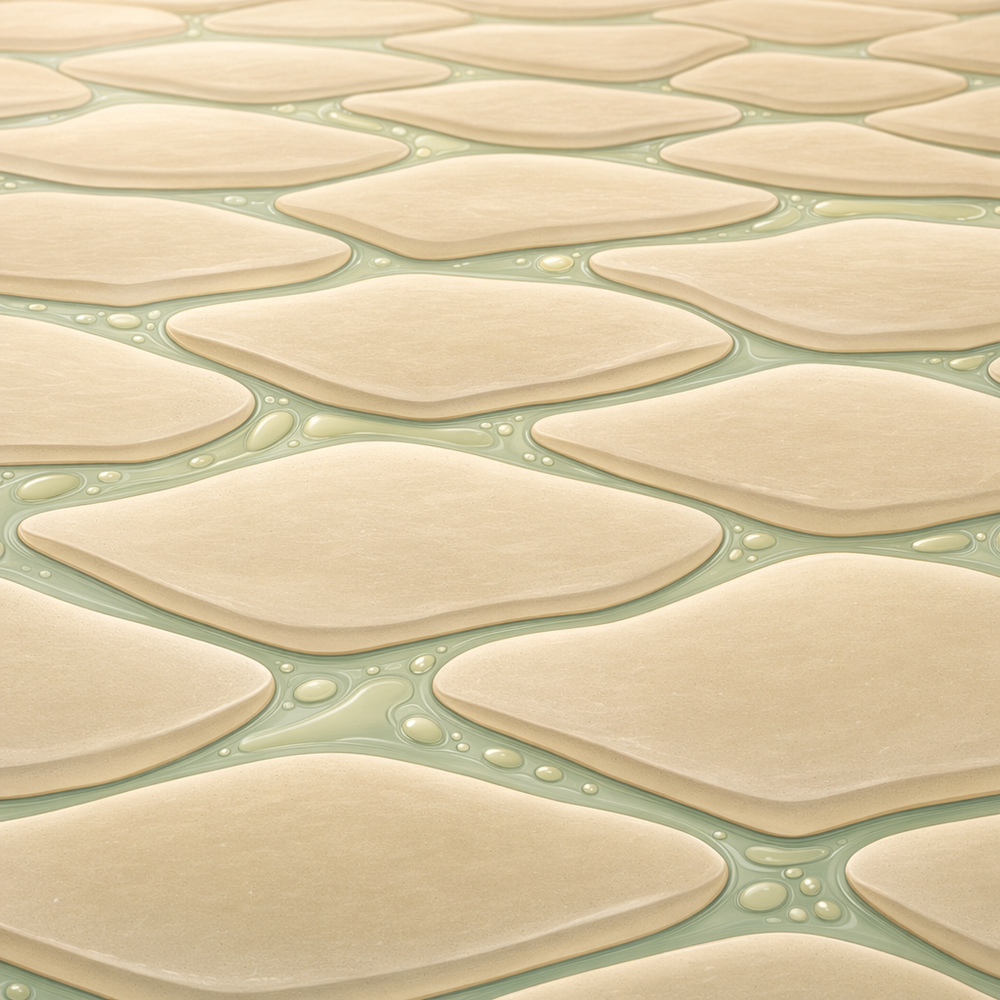
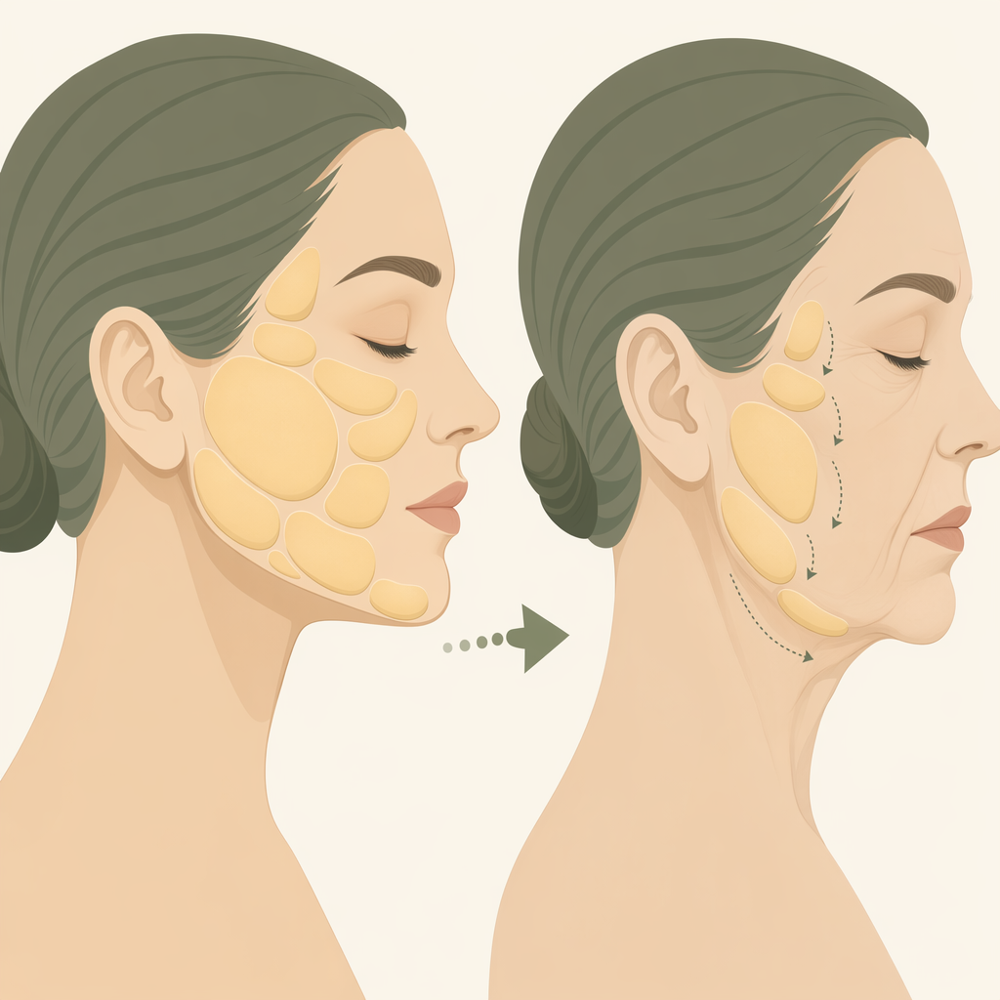
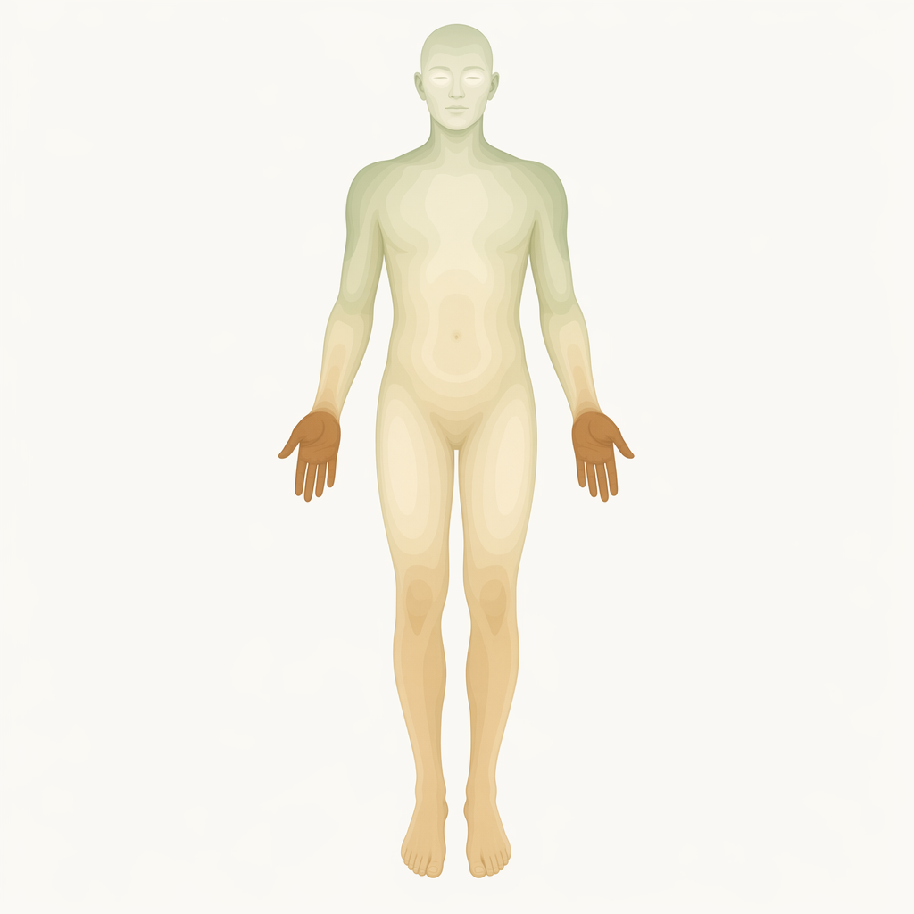

Hiểu ba lớp da để tư vấn trung thực và chọn đúng dịch vụ — nền tảng của mọi liệu trình.

~15.000–20.000 cm² · ~16% trọng lượng · dày 0,3 mm (mắt) → 3–4 mm (lòng bàn tay/chân)
| Lớp | Vai trò chính | Độ dày |
|---|---|---|
| Biểu bì | Hàng rào bảo vệ & giữ nước; nơi mỹ phẩm tác động chủ yếu | 0,07–0,15 mm |
| Trung bì | Collagen, elastin, mạch máu, tuyến, nang lông — săn chắc & lão hóa | 1–3 mm |
| Hạ bì | Mô mỡ — cách nhiệt, dự trữ, đệm, tạo đường nét khuôn mặt | <1 mm → >3 cm |

Biểu bì gồm 4 lớp: đáy → gai → hạt → sừng (thêm lớp bóng ở da dày). Lớp đáy chỉ một hàng tế bào.
| Tế bào | Tỷ lệ | Công dụng |
|---|---|---|
| Tế bào biểu bì mẹ | — | Phân chia sinh tế bào mới → quyết định sự đổi mới của da |
| Melanocyte | ~8% | Sản sinh Melanin → quyết định màu da |
| Merkel | ~1% | Cảm nhận chạm — đầu ngón tay, môi, nang tóc |
Keratinocyte chiếm ~90%; cứ 4–10 keratinocyte có 1 melanocyte.
(người 20–30 tuổi)
đi từ lớp đáy lên lớp sừng
nằm ở lớp sừng rồi bong ra
xem phần cơ chế sinh học
Lớp dày nhất trong các lớp sống (~8–10 lớp tế bào): tế bào ngậm nước, màng lipid khóa ẩm, gian bào giàu HA + dịch bạch huyết.

Lớp hạt (2–5 lớp): tế bào dẹt lại, xuất hiện hạt keratohyalin (tiền chất filaggrin), tiết lipid gian bào.

Hàng rào khỏe = nước được giữ bên trong, tác nhân lạ bị chặn bên ngoài.
Nằm bên trong viên gạch: axit amin (~40%), PCA, lactate, urea, ion. Sinh ra từ filaggrin (enzyme caspase-14). Ngậm nước, giữ pH acid nhẹ.
Đột biến gen filaggrin (FLG) → thiếu NMF → nền tảng của viêm da cơ địa. Chỉ gợi ý đi khám.
Lượng nước bay hơi qua lớp sừng. Da khỏe: ~2–10 g/m²/h. Mắt, môi TEWL cao → dễ khô, nhanh nhăn.
1 g HA giữ ~1000 lần trọng lượng nước; như miếng bọt biển tạo gel, nâng đỡ và khóa ẩm.
Bã nhờn + mồ hôi + tế bào sừng bong → màng acid yếu, pH 4,5–5,5; mạnh nhất ở vùng chữ T.
Lớp dày nhất (1–3 mm; mí mắt ~0,6 mm, lưng ~4 mm) — quyết định săn chắc, nếp nhăn và tốc độ lão hóa.
Sản sinh collagen, elastin, HA và dọn sợi cũ. Tái tạo chậm: vài tháng → vài năm. Lão hóa → hoạt động kém → chảy xệ, nhăn.
| Chất nền | Tỷ lệ | Vai trò |
|---|---|---|
| Collagen | 70–80% | Sợi đan dày → độ bền, chịu lực |
| Elastin | 2–4% | “Dây chun” → đàn hồi, bật lại |
| HA | 0,1–0,3% | Gel giữ nước → căng mọng |
Biểu bì không có mạch máu riêng — mọi dưỡng chất đều thấm lên từ trung bì.
Tế bào miễn dịch (không phải mỡ). UV / tổn thương → tiết Histamine → đỏ, ngứa → kích thích melanocyte → sạm, nám sau viêm.
Mô mỡ + vách liên kết, mạch máu, thần kinh. Mỏng ~1 mm (mắt) → >3 cm (bụng, mông).

Da không đồng nhất — đây là chìa khóa để chỉnh lực tay và chọn sản phẩm.
| Vùng | Đặc điểm | Lưu ý |
|---|---|---|
| Mắt | Mỏng nhất; gần như không mỡ đệm, mạch máu sát bề mặt | Kem chuyên biệt, thao tác cực nhẹ |
| Mũi | Chóp mũi dày nhất khuôn mặt | Dễ bít tắc → làm sạch sâu |
| Môi | Không tuyến bã, TEWL gấp ~3 lần má | Cấp ẩm, tẩy da chết nhẹ |
| Cổ | Mỏng, ít dầu, ít collagen | “Tố cáo” tuổi tác rõ nhất |
| Tay / chân | Lớp sừng dày nhất, không tuyến dầu | Dưỡng dạng đặc |

Tuyến bã dày đặc nhất; một lỗ chân lông có thể gắn tới 2 tuyến dầu → đổ dầu, lỗ chân lông to, dễ mụn.
Ít tuyến bã → khô hơn, dễ bong tróc, nhanh nhăn mảnh nếu thiếu ẩm.
6 cơ chế âm thầm diễn ra mỗi ngày dưới bề mặt da — bắt đầu với hai cơ chế của biểu bì.
| Độ tuổi | Thay mới |
|---|---|
| Trẻ sơ sinh | 14–21 ngày |
| 18–30 tuổi | 28–40 ngày |
| 30–50 tuổi | 45–60 ngày |
| Trên 50 tuổi | 60–90 ngày (hoặc hơn) |
Chậm → tế bào chết tích tụ → thô ráp, xỉn màu.
Nhờ màng acid pH ~4–6. Bị kiềm hóa (sữa rửa mặt mạnh) → bong tróc bất thường, viêm.
~24 giờ bịt lỗ hổng · 1–2 tuần phục hồi tường thành.
Áp dụng cho mọi kỹ thuật xâm lấn tại spa: nặn mụn, lăn kim, peel, laser.
Da tự lành hoàn toàn — KHÔNG để sẹo.
Vượt lớp đáy → chắc chắn để sẹo. Mọi thao tác an toàn chỉ ở biểu bì.
Nguyên nhân: lão hóa (cạn EGF), thiếu nước (enzyme cắt “keo” chỉ chạy khi đủ nước), UV, không tẩy da chết, kem nhiều sáp/dầu khoáng.
Hậu quả: xỉn, thô ráp; mụn, bít tắc; mỹ phẩm không thấm (“tường bê tông”); nếp nhăn lộ rõ.
Nguyên nhân: lạm dụng peel/laser/lột tẩy; cháy nắng cấp; vảy nến (3–7 ngày thay vì 28).
Hậu quả: “gạch lỗi”, TEWL vọt, kích ứng, viêm, tăng sắc tố, lão hóa sớm.
| Vấn đề | Liên quan tới |
|---|---|
| Nám / tăng sắc tố | Melanocyte hoạt động quá mức — UV, ánh sáng, nhiệt, nội tiết → chống nắng phổ rộng |
| Mụn | Tuyến bã + bít nang lông + vi khuẩn + viêm → không nặn mụn viêm sâu |
| Da dầu / viêm da tiết bã | Da dầu là sinh lý; viêm da tiết bã là bệnh → chuyển bác sĩ |
| Lão hóa & mất nước | Collagen/elastin giảm; da khô = thiếu dầu, da mất nước = thiếu nước |
| Cháy nắng / UV | UVB hại biểu bì; UVA xuyên sâu phá collagen |
| Viêm da cơ địa | Hàng rào hỏng (thiếu filaggrin/NMF) + dị ứng → phục hồi ceramide, tránh hương liệu |
| S.T.E.P.S | Trạng thái lý tưởng |
|---|---|
| Smoothness | Phẳng, mịn, lỗ chân lông thông thoáng |
| Tone | Đều màu, rạng rỡ, trong trẻo |
| Elasticity | Săn chắc, có độ nảy |
| Plumpness | Căng mọng từ bên trong |
| Sensitivity | Không dễ đỏ rát, kích ứng |